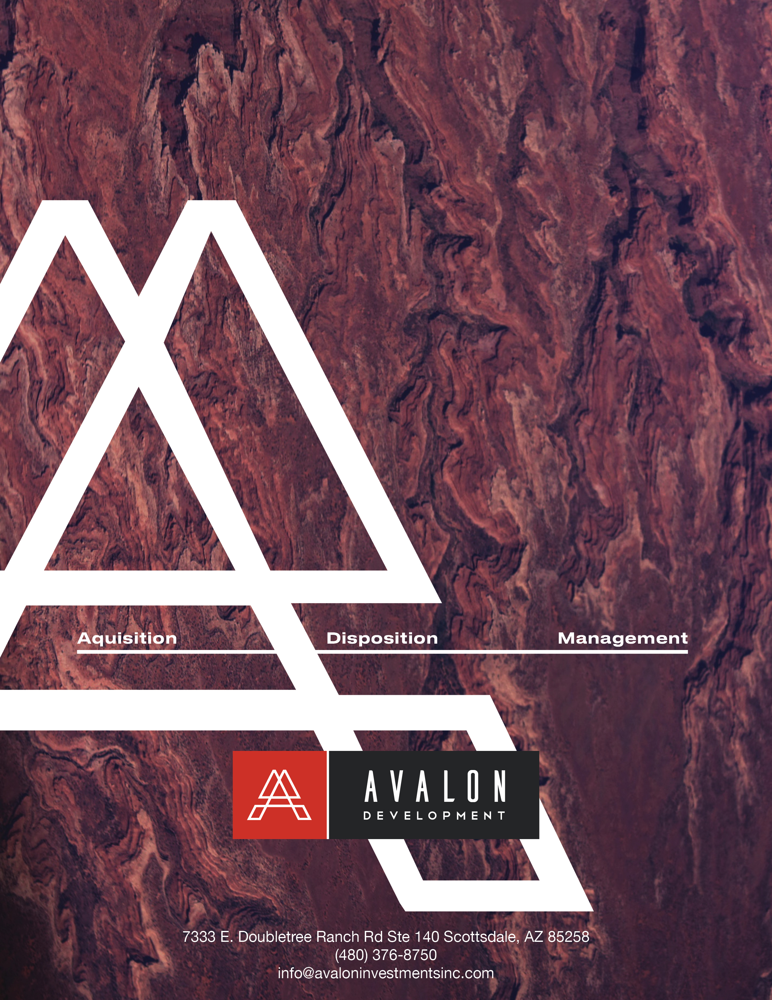
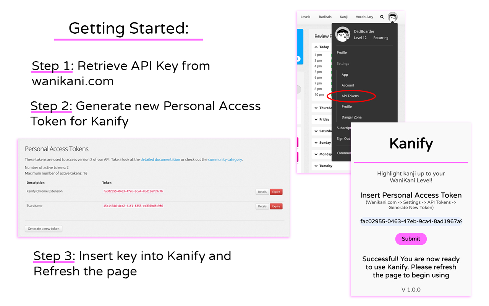
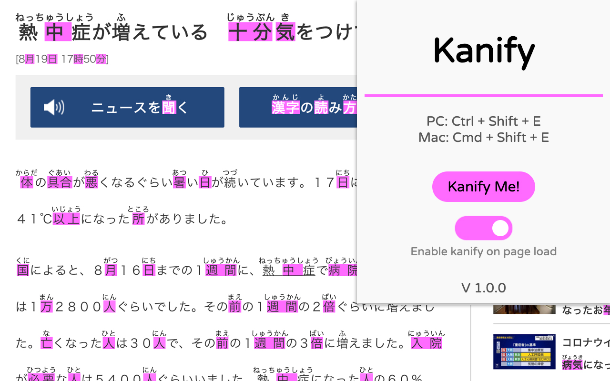
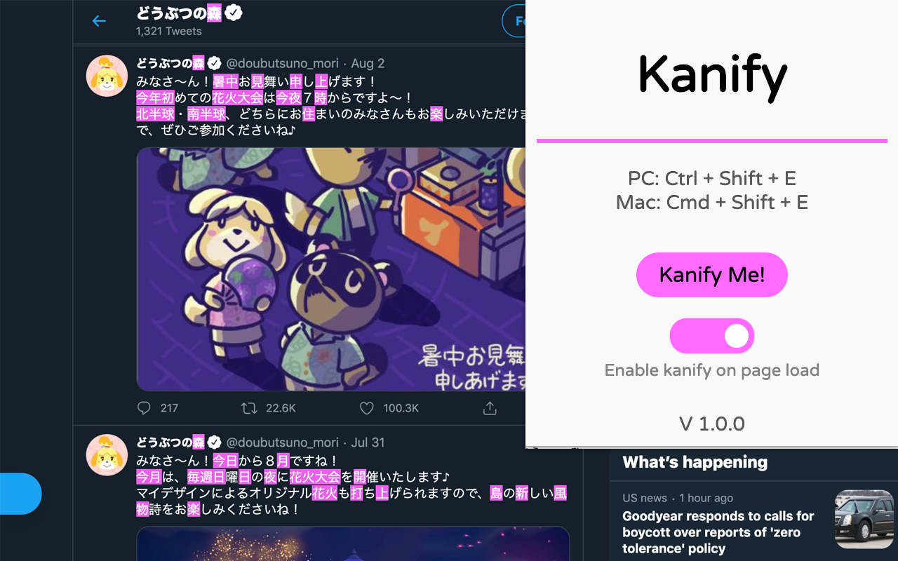
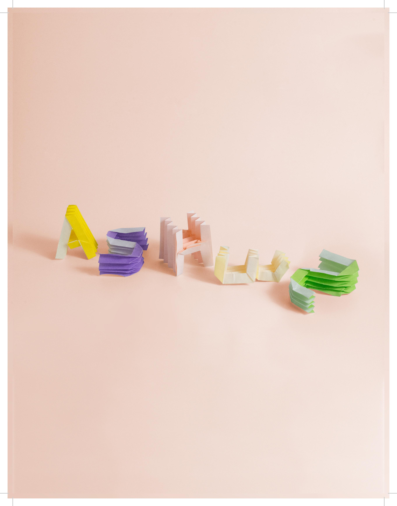
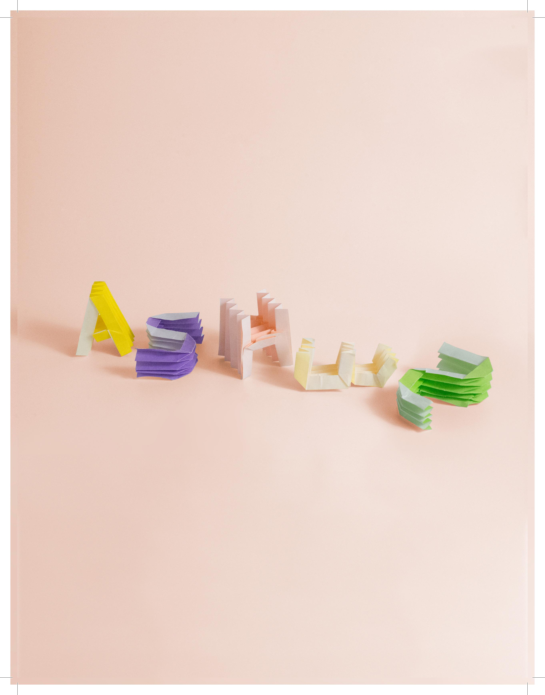
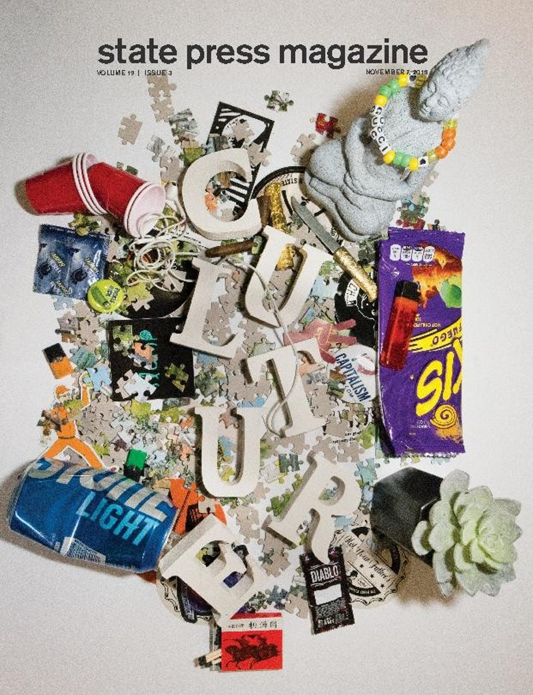
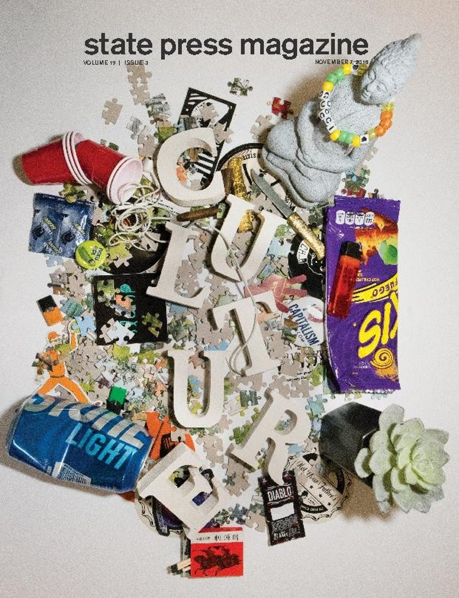
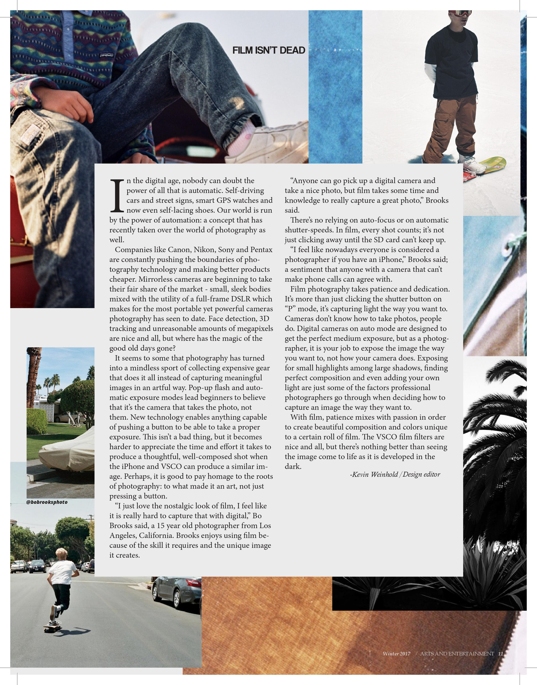
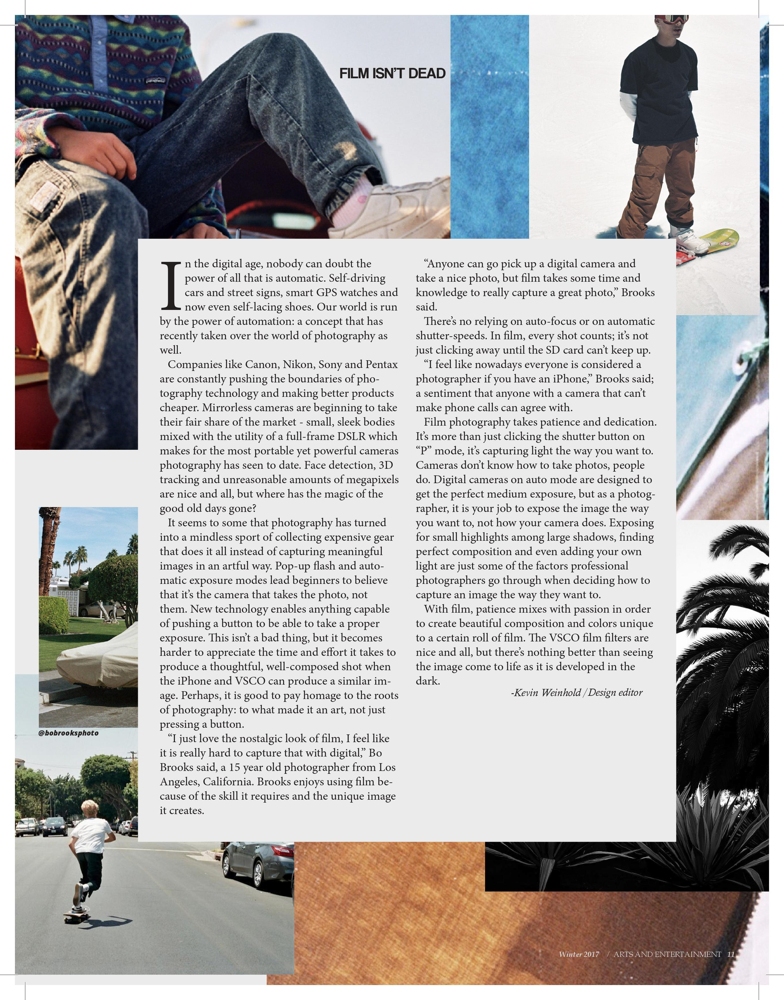

Avalon Development investor phamphlet

Google Chrome extension that highlights Japanese Kanji learned from WaniKani. Utilizes WaniKani's RESTful API to store the user's kanji data in Google Chrome's synchronous storage. Published to Chrome Store.
  ASU sustainability statistics ranked among other major universities committing to combatting climate change.
Designed and implemented info into an interactive format using React.
_page-0001.jpg) 

 



 
